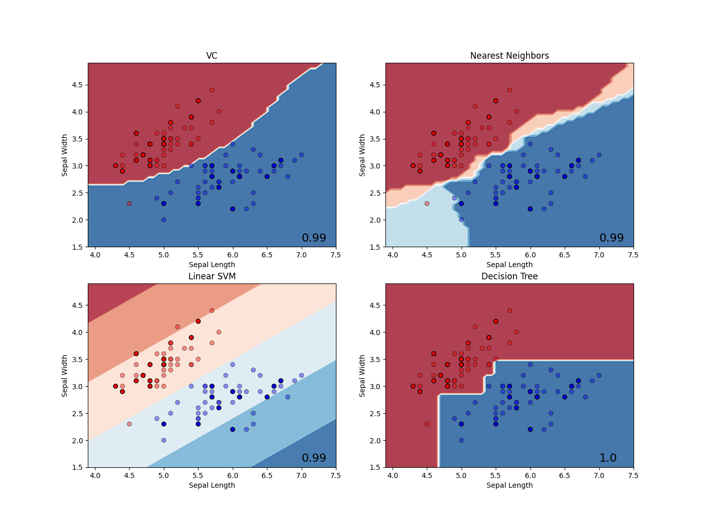
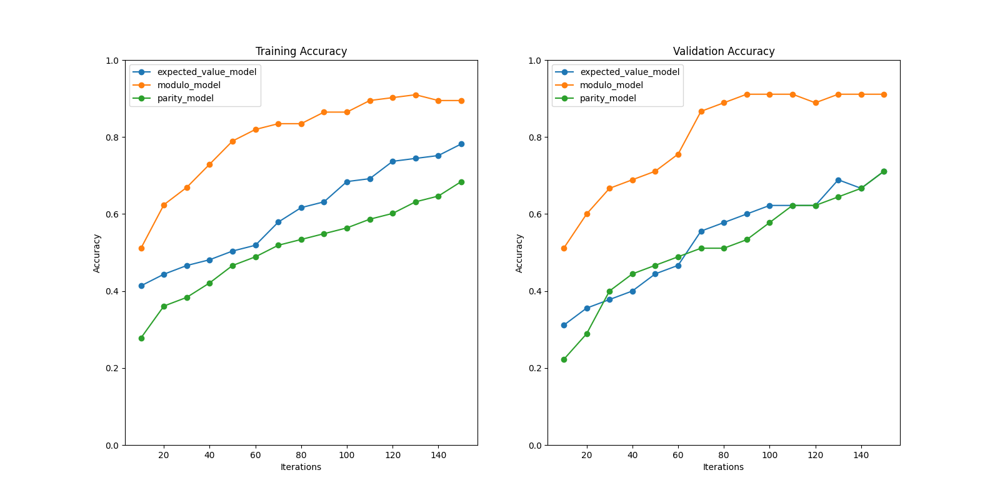

Variational classifier
This page contains advanced examples for the tno.quantum.ml.classifiers.vc package.
Examples of basic usage can be found in the module documentation.
The package provides a VariationalClassifier which has been implemented in accordance
with the scikit-learn estimator API. This means that the classifier can be used as any
other (binary and multiclass) scikit-learn classifier and combined with transformers through
Pipelines. In addition, the VariationalClassifier makes use of PyTorch tensors, optimizers,
and loss functions.
Requirements
Install the following dependencies to run the examples below:
pip install tno.quantum.ml.classifiers.vc~=3.0
pip install matplotlib
Examples
Example 1: Demonstrate classifier usage via sklearn pipelines.
{kind=link}
1"""Example using VariationalClassifier using Sklearn Pipeline."""
2
3import matplotlib.pyplot as plt
4from matplotlib.colors import ListedColormap
5from sklearn.inspection import DecisionBoundaryDisplay
6from sklearn.neighbors import KNeighborsClassifier
7from sklearn.pipeline import make_pipeline
8from sklearn.preprocessing import StandardScaler
9from sklearn.svm import SVC
10from sklearn.tree import DecisionTreeClassifier
11
12from tno.quantum.ml.classifiers.vc import VariationalClassifier
13from tno.quantum.ml.datasets import get_iris_dataset
14
15X_training, y_training, X_validation, y_validation = get_iris_dataset(
16 n_features=2, n_classes=2, random_seed=0
17)
18
19# Define classifiers
20classifiers = {
21 "VC": VariationalClassifier(
22 batch_size=10,
23 backend={"name": "default.qubit", "options": {}},
24 model={
25 "name": "expected_value_model",
26 "options": {"n_layers": 2, "n_trainable_sublayers": 2, "scaling": 0.3},
27 },
28 optimizer={"name": "adam", "options": {}},
29 use_bias=False,
30 random_init=True,
31 warm_init=False,
32 random_state=2,
33 ),
34 "Nearest Neighbors": KNeighborsClassifier(3),
35 "Linear SVM": SVC(kernel="linear", C=0.025),
36 "Decision Tree": DecisionTreeClassifier(max_depth=5),
37}
38
39cmap = ListedColormap(["#FF0000", "#0000FF"])
40plt.figure(figsize=(16, 16))
41
42for i, (name, classifier) in enumerate(classifiers.items(), 1):
43 ax = plt.subplot(2, 2, i)
44
45 if name == "VC":
46 classifier = make_pipeline(StandardScaler(), classifier)
47 classifier.fit(X_training, y_training, variationalclassifier__n_iter=150)
48 else:
49 classifier = make_pipeline(StandardScaler(), classifier)
50 classifier.fit(X_training, y_training)
51
52 DecisionBoundaryDisplay.from_estimator(
53 classifier,
54 X_training,
55 cmap=plt.cm.RdBu,
56 alpha=0.8,
57 ax=ax,
58 eps=0.5,
59 grid_resolution=50,
60 )
61 ax.scatter(
62 X_training[:, 0],
63 X_training[:, 1],
64 c=y_training,
65 cmap=cmap,
66 edgecolors="k",
67 alpha=0.4,
68 )
69
70 ax.scatter(
71 X_validation[:, 0],
72 X_validation[:, 1],
73 c=y_validation,
74 cmap=cmap,
75 edgecolors="k",
76 )
77
78 score = classifier.score(X_training, y_training)
79 ax.text(
80 ax.get_xlim()[1] - 0.5,
81 ax.get_ylim()[0] + 0.1,
82 f"{score:.2}",
83 size=16,
84 )
85 ax.set_title(name)
86 ax.set_xlabel("Sepal Length")
87 ax.set_ylabel("Sepal Width")
88
89plt.show()
Example 2: Demonstrate how to use different post-processing models.
{kind=link}
1"""Example to showcase different models."""
2
3import matplotlib.pyplot as plt
4import numpy as np
5from numpy.typing import NDArray
6from sklearn.preprocessing import StandardScaler
7from tqdm import tqdm
8
9from tno.quantum.ml.classifiers.vc import VariationalClassifier
10from tno.quantum.ml.datasets import get_wine_dataset
11
12# Load Wine dataset:
13X_training, y_training, X_validation, y_validation = get_wine_dataset(
14 n_features=8, n_classes=3, random_seed=0
15)
16
17
18def _std_scale(
19 X_training: NDArray[np.float64], X_validation: NDArray[np.float64]
20) -> StandardScaler:
21 std_scale = StandardScaler().fit(X_training)
22 return std_scale.transform(X_training), std_scale.transform(X_validation)
23
24
25def _accuracy(
26 labels: NDArray[np.float64], predictions: NDArray[np.float64]
27) -> np.float64:
28 return np.sum(np.isclose(labels, predictions)) / labels.size
29
30
31X_training, X_validation = _std_scale(X_training, X_validation)
32X_training = X_training / np.linalg.norm(X_training, ord=2, axis=-1)[:, None]
33X_validation = X_validation / np.linalg.norm(X_validation, ord=2, axis=-1)[:, None]
34
35
36# Perform classification for different models
37model_names = [
38 "expected_value_model",
39 "modulo_model",
40 "parity_model",
41]
42
43max_iterations = 150
44iterations = np.arange(10, max_iterations + 1, 10)
45fig, (ax1, ax2) = plt.subplots(1, 2, figsize=(16, 8))
46
47for model in model_names:
48 classifier = VariationalClassifier(
49 model={
50 "name": model,
51 "options": {"n_layers": 2, "n_trainable_sublayers": 2, "scaling": 0.3},
52 },
53 optimizer={"name": "adam", "options": {}},
54 warm_init=True,
55 )
56
57 accuracy_validation = []
58 accuracy_training = []
59
60 for _ in tqdm(iterations, desc=f"Processing {model}"):
61 classifier.fit(X_training, y_training, n_iter=10)
62
63 pred_validation = classifier.predict(X_validation)
64 pred_training = classifier.predict(X_training)
65
66 accuracy_validation.append(_accuracy(y_validation, pred_validation))
67 accuracy_training.append(_accuracy(y_training, pred_training))
68
69 ax1.plot(iterations, accuracy_training, label=model, marker="o")
70 ax2.plot(iterations, accuracy_validation, label=model, marker="o")
71
72# Set axis
73ax1.set_title("Training Accuracy")
74ax2.set_title("Validation Accuracy")
75ax1.set_xlabel("Iterations")
76ax2.set_xlabel("Iterations")
77ax1.set_ylabel("Accuracy")
78ax2.set_ylabel("Accuracy")
79ax1.set_ylim(0, 1)
80ax2.set_ylim(0, 1)
81ax1.legend()
82ax2.legend()
83plt.show()